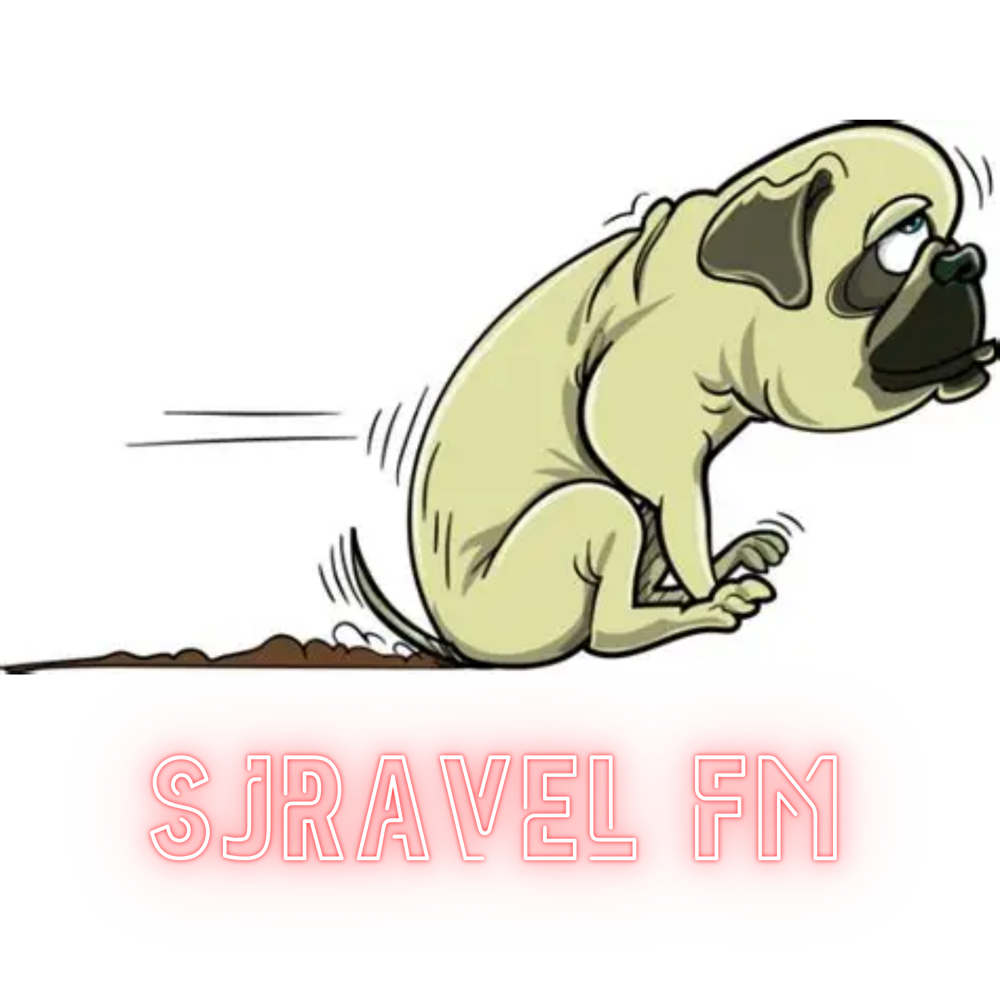

ECHT • LIMBURGS • GEZELLIG

SJRAVEL FM
De beste piratenhits — recht van het platteland
📻 Rechtstreeks uit de studio
JIJ LUISTERT NAAR SJRAVEL FM
Nederlandstalig • Piratenhits • Non-stop gezelligheid
Druk op ‘Luister live’ om af te stemmen.